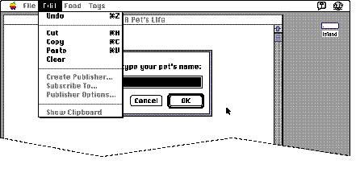
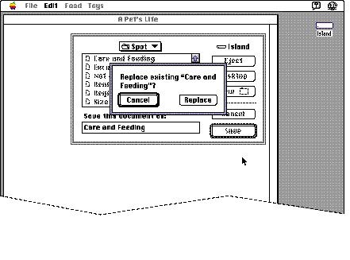

|
Modal Dialog Box BehaviorsThis section describes the standard behaviors and issues that you need to consider when you implement modal dialog boxes in your application. It includes discussions of providing access to the menu bar when your application displays a modal dialog box and why to avoid displaying more than one modal dialog box at a time.Menu Bar AccessWhen a modal dialog box is displayed, most menus are inaccessible, but sometimes it's useful for the user to have access to certain menus. The Help menu and the Edit menu are usually active. You can choose to enable some commands in some of your application's menus while your application displays a modal dialog box.The Dialog Manager and the Menu Manager interact to provide various degrees of access to the menus in your menu bar. For modal dialog boxes without editable text items, you can simply allow system software to automatically provide the appropriate access to your menu bar. However, your application should handle its own menu bar access for modal dialog boxes with editable text items by disabling the Apple menu (or the first item in the Apple menu) in order to take control of its menu bar access, and by disabling all of the application's menus except the Edit menu, as well as any inappropriate commands in the Edit menu. Figure 6-15 illustrates how an application disables all of its own menus except its Edit menu when displaying a modal dialog box containing editable text items. Access to the Edit menu can be very helpful for the user who prefers to use the commands in the Edit menu to copy and paste text from one text field to another rather than retyping the text. Figure 6-15 Access to the Edit menu when displaying a modal dialog box  When the user dismisses the modal dialog box, the Menu Manager restores all menus to the state they were in prior to the appearance of the modal dialog box--unless your application handles its own menu bar access, in which case you must restore the menus to their previous states. See Inside Macintosh: Macintosh Toolbox Essentials for more information about providing access to the menu bar while a modal dialog box is onscreen. Stacking Modal Dialog BoxesIdeally a user should see only one modal dialog box at a time. The user should never see more than two modal dialog boxes on the screen at any time. One example where a second modal dialog box appears is when the user saves a file with the same name as another file. Then the Standard File Package displays an alert box on top of the standard file dialog box. The alert box questions the user about whether to replace the existing file. If the user answers the question by clicking the Replace button, the alert box and the standard file dialog box both disappear and the action is completed. If the user clicks the Cancel button, the alert box disappears and the standard file dialog box remains on the screen; this allows the user to perform another action, such as saving the file with a different name.If you find that you can't avoid displaying a second modal dialog box, make sure to obscure as little as possible of the first modal dialog box. Also make sure that the first dialog box (the one in the background) is dimmed when the second dialog box appears. (You dim the dialog box by dimming the border and buttons, and by unhighlighting any text selection; make sure your application stores the text selection so that it can restore it when the second dialog box is dismissed.) By dimming the dialog box in the background, you focus the attention of the user on the active dialog box--the one in which the user must click. Figure 6-16 shows two modal dialog boxes correctly displayed. Notice that the alert box appears on top of the dialog box for saving files, but doesn't totally obscure it. In this way, users still get some context for the current action. Figure 6-16 Second modal dialog box on top of first one  Avoid closing a modal dialog box and displaying another modal dialog box in response to a user action. This situation creates a "tunneling modal dialog box" syndrome from which it is difficult to recover. Since the previous modal dialog box is not there for context, the user can't predict what will happen next, and can't get back to the last place. In other words, don't create a situation where the user is caught in a maze of dialog boxes. |